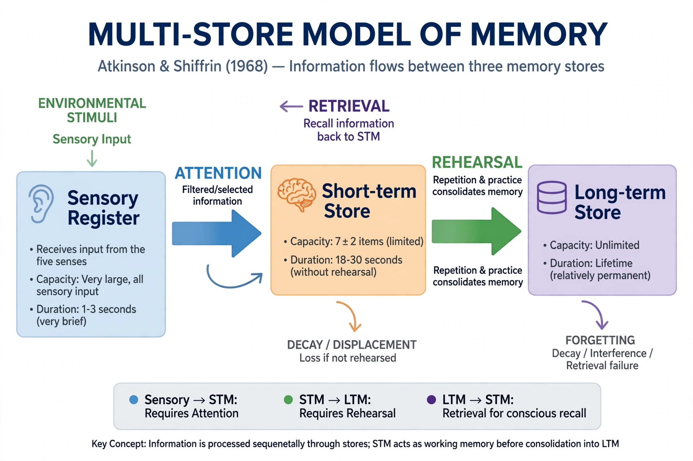

Atkinson–Shiffrin memory model
| Atkinson–Shiffrin model | |
|---|---|
| Proposed by | Richard Atkinson and Richard Shiffrin |
| Year | 1968 |
| Components | Sensory register, short-term store, long-term store |
| Also known as | Multi-store model of memory; modal model |

The Atkinson–Shiffrin memory model (also known as the multi-store model or modal model) is a model of memory proposed in 1968 by Richard Atkinson and Richard Shiffrin. The model describes human memory as comprising three permanent structural components: a sensory register, a short-term store, and a long-term store, through which environmental input passes in a linear sequence.
Components
Sensory register
Information from the environment first enters the sensory register, a very brief store (iconic memory for vision, echoic memory for hearing) holding a large amount of information for a fraction of a second. Material that is attended to passes into short-term memory; the rest decays.
Short-term store
The short-term store has limited capacity — famously about seven items, plus or minus two (Miller's "magical number") — and a duration of roughly 15–30 seconds without rehearsal. Maintenance rehearsal keeps information active and, in the original model, transfers it to long-term storage.
Long-term store
The long-term store is treated as a permanent store of essentially unlimited capacity, from which information is retrieved back into the short-term store when needed.
Influence and criticism
The modal model became the standard framework for memory research and inspired extensive experimental work, including studies of the serial position effect and of amnesic patients. It was later criticised as oversimplified: rehearsal alone does not guarantee long-term encoding, and the unitary short-term store was largely superseded by Baddeley's working memory model, which proposes multiple specialised components.
See also: Memory · Working memory · Short-term memory · Long-term memory